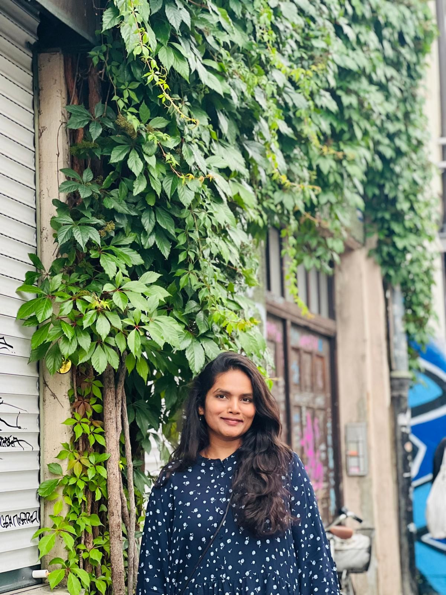

Frequency-aware image generation
Separating low and high frequencies so generated images keep structure and fine texture.
ECCV 2026
Ph.D. candidate in machine learning at the University of Mannheim. I build generative models that get both the big picture and the fine detail right, for images and 3D shapes, and I study how to keep deep networks robust and fair under attack.

TMI'm a Ph.D. candidate in the Machine Learning Group at the University of Mannheim, advised by Prof. Dr.-Ing. Margret Keuper. My research covers high-fidelity generative models in 2D and 3D, and the robustness and fairness of deep neural networks under adversarial attacks.
In 2024 I interned at Autodesk Research, where I worked on wavelet-based generative modelling for 3D shapes. Before that, I built transformer-based models for generating nested 3D shapes at Endress+Hauser.
I came to machine learning from engineering: a Bachelor's in Mechanical Engineering in Hyderabad, then a Master's in Mechatronics at the University of Siegen, where I first worked on reinforcement learning.
Three threads, one question: does the model get the details right, for every input and every group?
Separating low and high frequencies so generated images keep structure and fine texture.
Wavelet-guided autoregressive models and transformers that build 3D shapes, including shapes nested inside others.
Adversarial training that doesn't leave some classes far more vulnerable than others.
● research ● education
Generative models for images and 3D shapes; adversarial robustness and fairness. Teaching assistant and thesis supervisor.
Built 3D-WAG, a hierarchical wavelet-guided autoregressive model for fast, high-fidelity 3D shape generation. Published at BMVC 2025.
Built FullFormer, a transformer-based implicit generative model for nested 3D shapes, including non-watertight surfaces. Published at GCPR 2023.
Reinforcement learning for facility layout planning and dynamic job-shop scheduling.
I'm finishing my Ph.D. in early 2027 and looking for research scientist roles in generative AI and computer vision. I'm also happy to collaborate on related research.